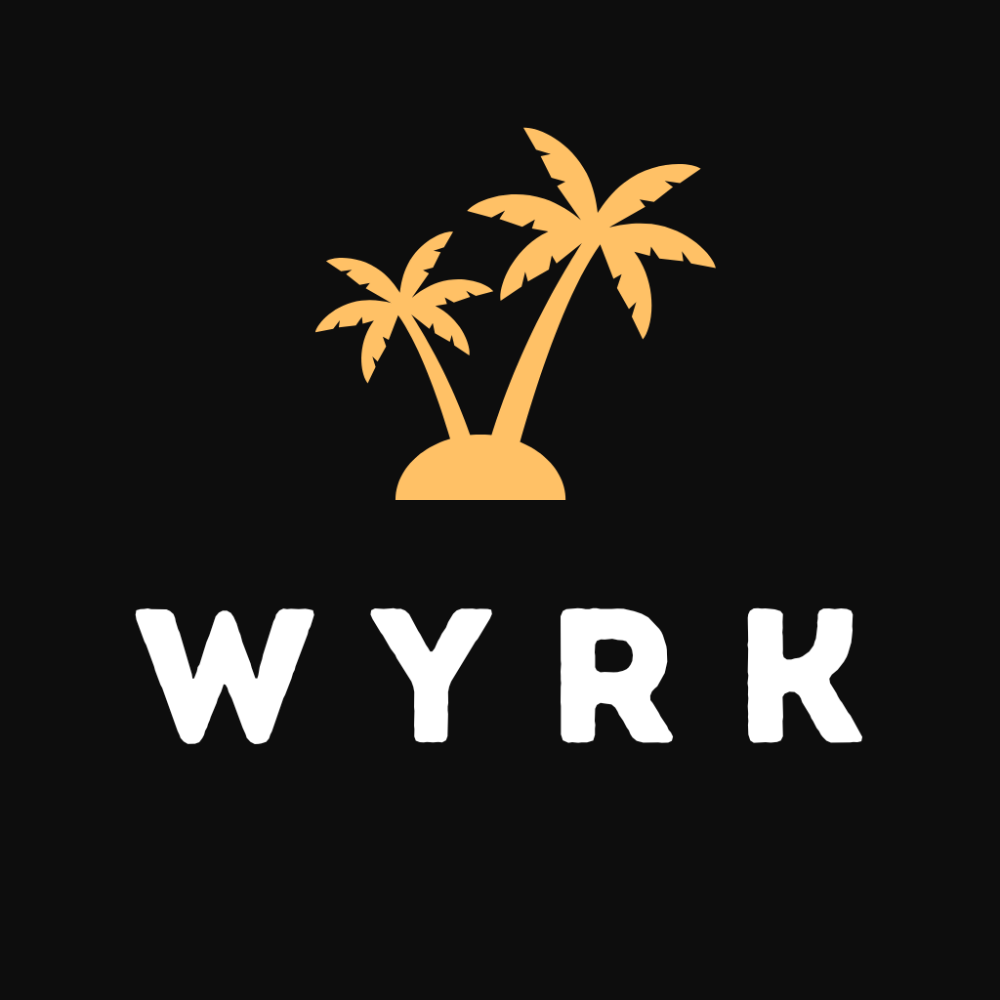
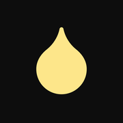

Wyrk LLC
Wyrk LLC is focused on designing and shipping modern social experiences with a strong product identity, clear UX, and tools that help creators and communities connect directly.

Building digital products for creator communities.
Wyrk LLC is focused on designing and shipping modern social experiences with a strong product identity, clear UX, and tools that help creators and communities connect directly.


DRIPn is an in-the-moment, access-based social platform built for creators and their communities. Creators can offer subscription tiers with different levels of access and build direct relationships with their audiences through premium, community-driven experiences.
Fans can discover and follow creators through privacy-forward, lightweight identities, then interact directly inside each creator ecosystem. The product direction centers on real-time expression, controlled access, and sustainable creator monetization.
Status: DRIPn is currently in active development.
Audience: DRIPn is intended for adults 18+ only.
Wyrk LLC is building DRIPn with a safety-first operating model for adult users, including policy standards, reporting pathways, and moderation workflows designed to reduce abuse and policy violations.
Core legal and policy documentation for Wyrk LLC and DRIPn is in progress:
Privacy Policy, Terms of Service, Community Guidelines, and Acceptable Use Policy.